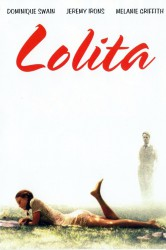

#3755 Lolita
 
 IMDB-Wertung: 6.9 / 10
IMDB-Wertung: 6.9 / 10  Tomatometer: 68
Tomatometer: 68  Metascore: 0
Metascore: 0 
Hubert Humbert (Jeremy Irons) kommt aus Europa in die USA, um dort als Professor für französische Literatur an einem College in Neuengland zu unterrichten. Er zieht zur Untermiete in das Haus der Witwe Charlotte Haze (Melanie Griffith), die eine bezaubernde Tochter namens Lolita (Dominique Swain) hat. Der Professor fühlt sich von dem erst 12 Jahre alten Mädchen angezogen. Um ihr nahe sein zu können, heiratet Humbert die Witwe. Als seine neue Ehefrau von den erotischen Obsessionen des Professors erfährt, verläßt sie ihn Hals über Kopf und stirbt bei einem Autounfall. Nun hat Professor Humbert freie Bahn und lebt mit Lolita wie Mann und Frau. Je unabhängiger Lolita wird, desto eifersüchtiger wacht er über sie. Schließlich verläßt ihn das Mädchen und Humbert macht sich auf die Suche nach Lolita.
Jahr: 1997
Dauer: 137 Minuten
FSK: 18
Land: USA Studio: Samuel Goldwyn Company, TheTonspuren:
Untertitel: Deutsch,
Auflösung: 720p (1280x688) Größe: 5212 MB
Genre: Drama, Liebe
Regisseur: Adrian Lyne
Drehbuch: Doug Atchison
Soundtrack:
Darsteller:
 Jeremy Irons als Humbert Humbert
Jeremy Irons als Humbert Humbert Melanie Griffith als Charlotte Haze
Melanie Griffith als Charlotte Haze Frank Langella als Clare Quilty
Frank Langella als Clare Quilty Dominique Swain als Dolores 'Lolita' Haze
Dominique Swain als Dolores 'Lolita' Haze Suzanne Shepherd als Miss Pratt
Suzanne Shepherd als Miss Pratt Ed Grady als Dr. Melinik
Ed Grady als Dr. Melinik Michael Goodwin als Mr. Beale
Michael Goodwin als Mr. Beale Angela Paton als Mrs. Holmes
Angela Paton als Mrs. Holmes Ronald Pickup als Young Humbert's Father
Ronald Pickup als Young Humbert's Father Michael Culkin als Mr. Leigh
Michael Culkin als Mr. Leigh Annabelle Apsion als Mrs. Leigh
Annabelle Apsion als Mrs. Leigh- Hallee Hirsh als Little Girl in Bunny Suit
 Jim Grimshaw als Policeman
Jim Grimshaw als Policeman Lenore Banks als Nurse at Hospital
Lenore Banks als Nurse at Hospital- Kirk Gagnon als Car Hop , uncredited
 Muse Watson als (uncredited
Muse Watson als (uncredited- Keith Reddin als Reverend Rigger
- Erin J. Dean als Mona
- Joan Glover als Miss LaBone
- Pat Pierre Perkins als Louise
- Ben Silverstone als Young Humbert Humbert
- Emma Griffiths Malin als Annabel Lee
- Don Brady als Frank McCoo
- Trip Hamilton als Mr. Blue
- Michael Dolan als Dick
- Scott Brian Higgs als Policeman, accident
- Mert Hatfield als Policeman, accident
- Chris Jarman als Policeman
- Hudson Lee Long als Elderly Clerk
- Dorothy Deavers als Receptionist
- Donnie Boswell Sr. als Taxi Driver
- Judy Duggan als Solo Singer / Piano Player
- Margaret Hammonds als Nurse
- Paula Davis als Motel Clerk
 Tim Gallin als Hospital Orderly
Tim Gallin als Hospital Orderly- Cy Fahrenholtz als Hotel Guest , uncredited
- John Franklyn-Robbins als (uncredited
- Kathryn Peterson als Private School Guide , uncredited
Datei: X:\FSK18-1900-1999\Lolita (1997, FSK18, 1280x688).mkv seit 01.06.2016
Festplatte: FSK18
 Es gibt insgesamt 108 Filme in der Gruppe 'FSK18-1900-1999'
Es gibt insgesamt 108 Filme in der Gruppe 'FSK18-1900-1999'